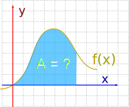
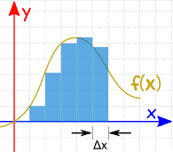
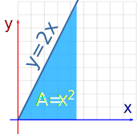
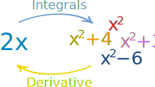
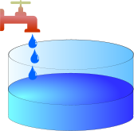
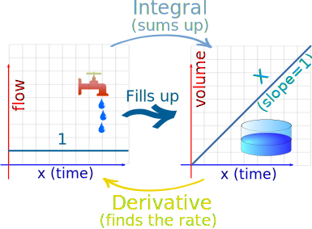
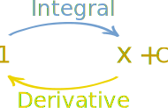
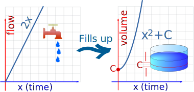
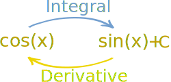

Introduction to Integration
Integration is a way of adding slices to find the whole.
Integration can be used to find areas, volumes, central points and many useful things. But it is easiest to start with finding the area between a function and the x-axis like this:

What is the area?
Slices
|
We could calculate the function at a few points and add up slices of width Δx like this (but the answer won't be very accurate): |
 | |
|
We can make Δx a lot smaller and add up many small slices (answer is getting better):
|
 |
|
|
And as the slices approach zero in width, the answer approaches the true answer. We now write dx to mean the Δx slices are approaching zero in width. |
 |
That is a lot of adding up!
But we don't have to add them up, as there is a "shortcut", because ...
... finding an Integral is the reverse of finding a Derivative.
(So you should really know about Derivatives before reading more!)
Like here:
Example: 2x
An integral of 2x is x2 ...

... because the derivative of x2 is 2x
(More about "+C" later.)
That simple example can be confirmed by calculating the area:

Area of triangle = 12(base)(height) = 12(x)(2x) = x2
Integration can sometimes be that easy!
Notation
|
The symbol for "Integral" is a stylish "S" |
 |
After the Integral Symbol we put the function we want to find the integral of (called the Integrand),
and then finish with dx to mean the slices go in the x direction (and approach zero in width).
And here is how we write the answer:
Plus C
We wrote the answer as x2 but why +C ?
It is the "Constant of Integration". It is there because of all the functions whose derivative is 2x:

- the derivative of x2 is 2x,
- and the derivative of x2+4 is also 2x,
- and the derivative of x2+99 is also 2x,
- and so on!
Because the derivative of a constant is zero.
So when we reverse the operation (to find the integral) we only know 2x, but there could have been a constant of any value.
So we wrap up the idea by just writing + C at the end.
A Practical Example: Tap and Tank

Let us use a tap to fill a tank.
The input (before integration) is the flow rate from the tap.
We can integrate that flow (add up all the little bits of water) to give us the volume of water in the tank.
Imagine a Constant Flow Rate of 1:

With a flow rate of 1, the tank volume increases by x. That is Integration!An integral of 1 is x
With a flow rate of 1 liter per second, the volume increases by 1 liter every second, so would increase by 10 liters after 10 seconds, 60 liters after 60 seconds, etc.
The flow rate stays at 1, and the volume increases by x
And it works the other way too:
If the tank volume increases by x, then the flow rate must be 1.
The derivative of x is 1
This shows that integrals and derivatives are opposites!

Now For An Increasing Flow Rate
Imagine the flow starts at 0 and gradually increases (maybe a motor is slowly opening the tap):

As the flow rate increases, the tank fills up faster and faster:
- Integration: With a flow rate of 2x, the tank volume increases by x2
- Derivative: If the tank volume increases by x2, then the flow rate must be 2x
We can write it down this way:
|
The integral of the flow rate 2x tells us the volume of water: |
∫2x dx = x2 + C | |
|
The derivative of the volume x2+C gives us back the flow rate: |
ddx(x2 + C) = 2x |

And hey, we even get a nice explanation of that "C" value ... maybe the tank already has water in it!
- The flow still increases the volume by the same amount
- And the increase in volume can give us back the flow rate.
Which teaches us to always remember "+C".
Other functions
How do we integrate other functions?
If we are lucky enough to find the function on the result side of a derivative, then (knowing that derivatives and integrals are opposites) we have an answer. But remember to add C.
Example: what is ∫cos(x) dx ?

From the Rules of Derivatives table we see the derivative of sin(x) is cos(x) so:
∫cos(x) dx = sin(x) + C
But a lot of this "reversing" has already been done (see Rules of Integration).
Example: What is ∫x3 dx ?
On Rules of Integration there is a "Power Rule" that says:
∫xn dx = xn+1n+1 + C
We can use that rule with n=3:
∫x3 dx = x44 + C
Knowing how to use those rules is the key to being good at Integration.
So learn the rules and get lots of practice.
Learn the Rules of Integration and Practice! Practice! Practice!
(there are some questions below to get you started)
Definite vs Indefinite Integrals
We have been doing Indefinite Integrals so far.
A Definite Integral has actual values to calculate between (they are put at the bottom and top of the "S"):
 |
 |
|
| Indefinite Integral | Definite Integral |
Read Definite Integrals to learn more.